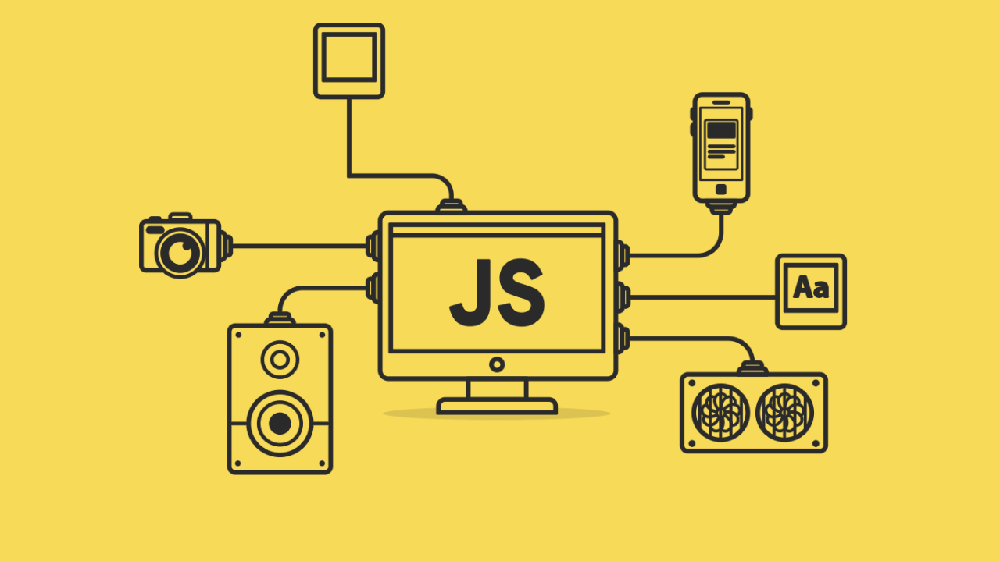

Published on January 15, 2025 | By Admin
JavaScript has come a long way from being just a simple scripting language for websites. In 2025, it is the backbone of modern web and mobile development, powering frameworks, libraries, and entire ecosystems. Whether you are building a personal blog, a complex enterprise app, or even working with AI-driven tools, JavaScript is everywhere.
The Evolution of JavaScript
When JavaScript was first introduced in the 1990s, few could have predicted its rise to dominance. Fast forward to today, and it’s no longer just a client-side scripting language—it now powers full-stack applications thanks to Node.js, hybrid mobile apps with React Native, and even desktop apps via Electron.
In 2025, the ecosystem is more powerful than ever. ES2025 has introduced features like pattern matching, pipeline operators, and the temporal API, making the language cleaner, faster, and more intuitive for developers.
Key Skills for Developers in 2025
To truly master JavaScript this year, developers need to go beyond the basics. Some essential skills include:
- Modern Frameworks: Master React, Vue, or Angular to stay relevant in front-end development.
- TypeScript: Strong typing is now standard in most companies for scalability and maintainability.
- Node.js and Deno: Server-side JavaScript is growing rapidly, and learning both will set you apart.
- Next.js / Nuxt.js: Meta-frameworks for SSR and static sites are critical for performance-focused apps.
Real-World Applications of JavaScript
JavaScript isn’t just for “websites” anymore. Here are some areas where JS is being used extensively:
- Progressive Web Apps (PWAs): Apps that look and feel like native apps but run on the web.
- AI-Powered Apps: With TensorFlow.js, developers can now run machine learning models directly in the browser.
- Internet of Things (IoT): Frameworks like Johnny-Five allow developers to control robots and smart devices.
- Cross-Platform Development: Tools like React Native and Ionic let developers build for iOS and Android using one codebase.
Trends to Watch in 2025
The JavaScript landscape keeps evolving. Here are the trends every developer should watch:
- Serverless Architectures: Functions that scale automatically without infrastructure headaches.
- AI and JavaScript: With WebGPU, running AI models in the browser is faster than ever.
- Micro-Frontends: Breaking large apps into smaller, independent pieces for better scalability.
- Edge Computing: Running JavaScript at the edge with Cloudflare Workers or Deno Deploy.
Did You Know?
According to the Stack Overflow Developer Survey 2024, JavaScript has been the most-used programming language for 12 years in a row—showing no signs of slowing down.
Career Opportunities
JavaScript developers remain in high demand. From startups to tech giants, every company needs skilled JS engineers. Roles like Front-End Developer, Full-Stack Engineer, and JavaScript Architect are some of the most sought-after positions in the job market.
Salaries have also risen significantly. In 2025, a senior JavaScript developer in the US can earn an average of $120,000–$150,000 per year.
Learning Resources
If you’re serious about mastering JavaScript, here are some resources worth exploring:
- MDN Web Docs: The most authoritative resource for all things JavaScript.
- freeCodeCamp: Free and beginner-friendly interactive coding tutorials.
- JavaScript.info: A modern guide to JavaScript with practical examples.
- Frontend Masters / Udemy: Paid advanced courses for deep dives into frameworks and architecture.
“Any application that can be written in JavaScript, will eventually be written in JavaScript.” — Jeff Atwood
Conclusion
JavaScript is no longer just a tool—it’s an ecosystem that powers the digital world. Mastering it in 2025 means keeping up with frameworks, adopting TypeScript, understanding server-side technologies, and staying ahead of new features. The language will continue to evolve, and so must we as developers. If you’re serious about building a career in tech, there has never been a better time to master JavaScript.
Back to Home